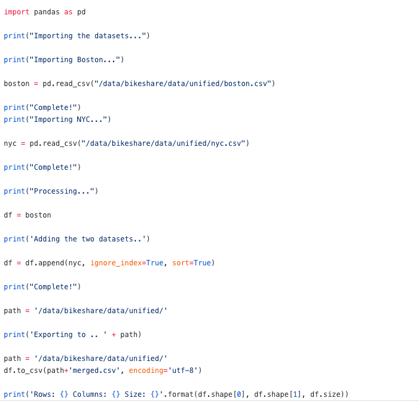

When Swop finished normalizing the Boston datasets, we started the process of combing two datasets together. It took us a while to find the best way to merge two datasets. However, since our process of cleaning and normalizing the data was quite good, it’s more easy and convenient to merge together. After trying different ways, we finally figured out the best way to deal this problem. Here below is our complete code to combine two datasets.

We planned to start doing some basic data visualization on the next day. Hope everything wil be going well!